phone webcam <<
Previous Next >> Android for Webcam
ios for Webcam
［iVCam的幾大特點］
- 低延遲！高速度！高質量的即時視頻
- 前後向鏡頭畫面都支援，並且可以即時切換
- 只需要Wi-Fi或是USB連接手機，簡單應用無阻礙
- 音頻也能接收，將手機變為PC的無線麥克風使用
- 其他數不清的遠端執行優點
STEP1-在PC/手機上下載iVcam:
使用PC並Google搜尋iVcam，並點擊官網連結至官網會出現下方圖片，點擊紅框處下載。
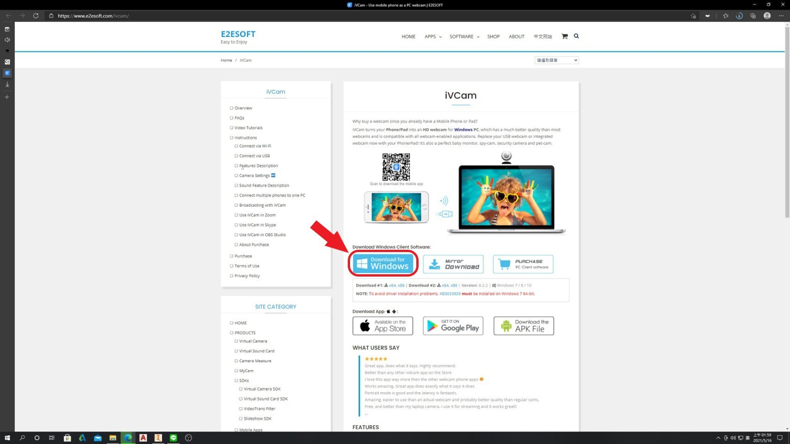
下載完成之資料夾:
下載安裝完成後必須重啟起計算機(windows)，這是軟件完成計算機上driVer設置的必需步驟 。如果不重新啟動，將無法連接。
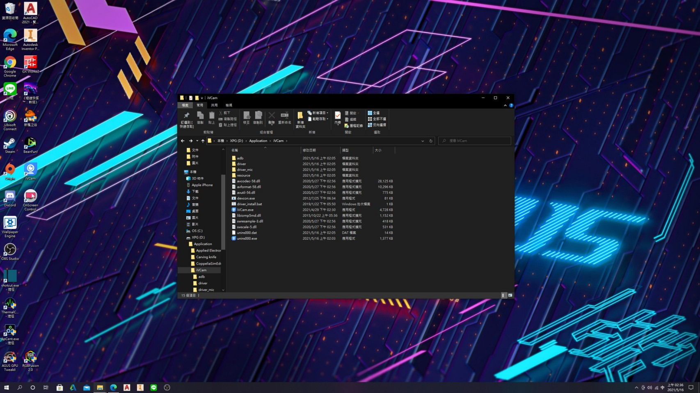
使用機型: iphone XR
軟體版本: iOS 14.0.1
iVcam與iphone兼容上述型號以下版本
接下來開啟手機點擊APP Store下方紅框處:
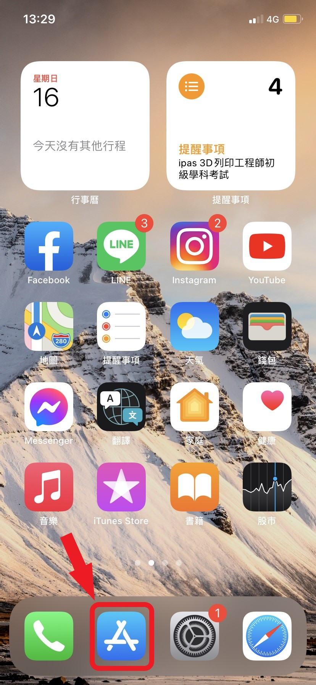
搜尋iVcam，點擊下載並開啟:
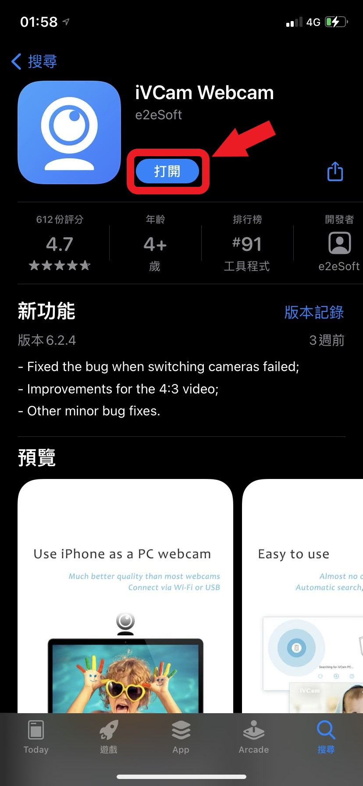
STEP2－將電腦與手機連結到同一個Wi-Fi
必須連結到同個IP才能成功使用手機鏡頭成為webcam鏡頭。
下圖為未連結狀態(iphone):
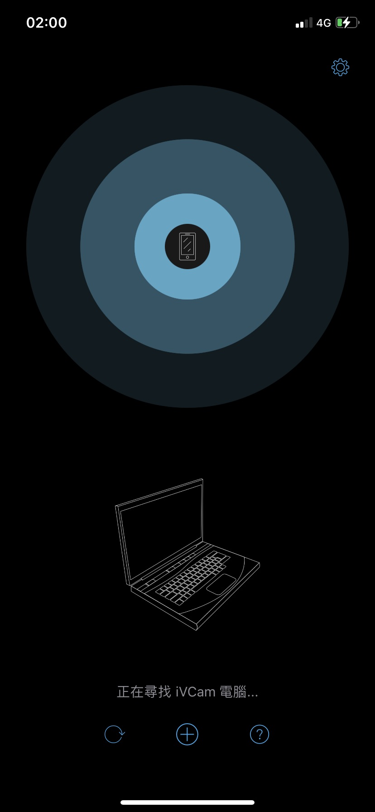
下圖為未連結狀態(PC windows):
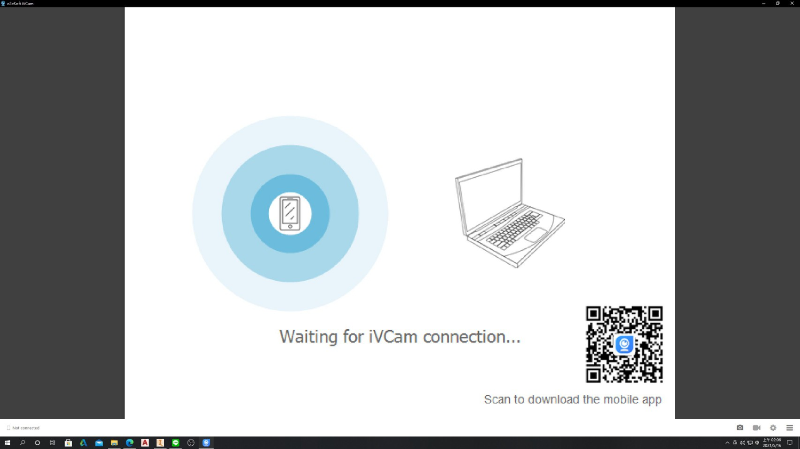
[iVcam]成功連結畫面:
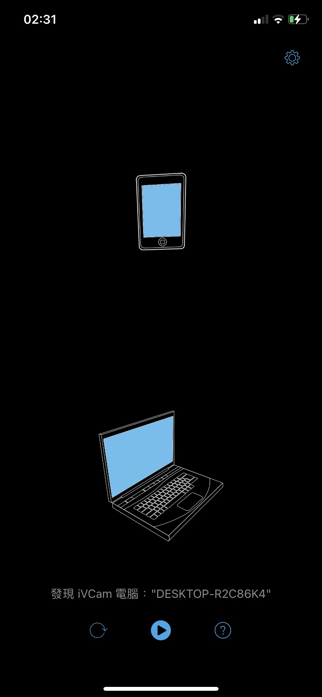
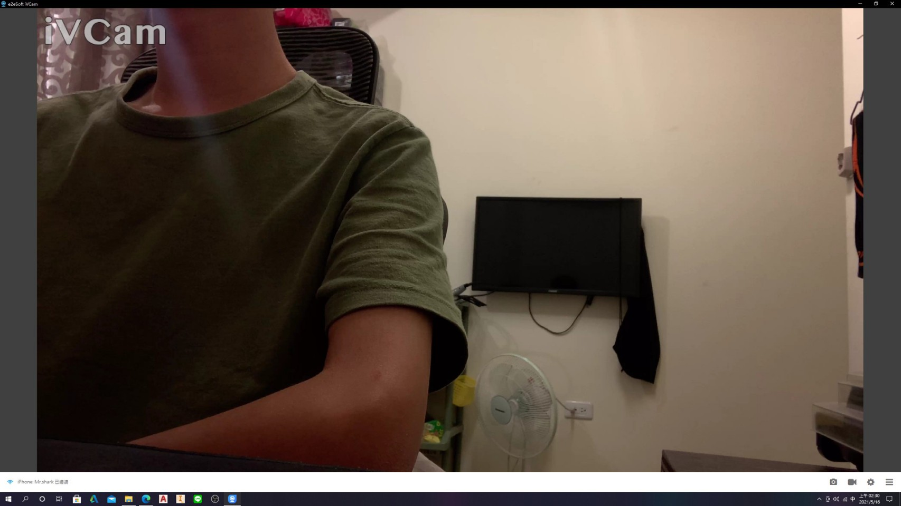
只要手機跟電腦有順利連接到Wi-Fi或USB的話，兩邊就會自動配對成功！螢幕上的三個功能分別是「拍照」、「擷取螢幕畫面」和「錄影」。
STEP3－測試電腦與手機的鏡頭/麥克風
順利連接後，可透過「Test Webcam and Microphone Online」，這個網站可供測試電腦攝影機&麥克風，確認鏡頭跟麥克風是否有畫面及成功收音！
STEP4-Bonus－調整視訊的設定（尺寸、畫質、音質 etc.）
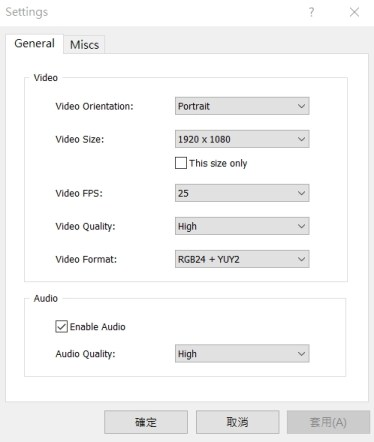
↑ 調整iVCam：直向、橫向、尺寸、畫質、音質 etc.
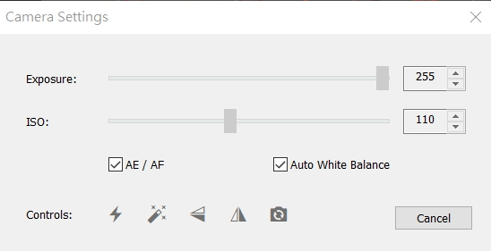
↑ 調整iVCam：特效、鏡像畫面、前置後置鏡頭 etc.
這幾個選項，隨時可以依照自己的喜好，或是連線的穩定性，來做調整！
STEP5-使用OBS擷取手機鏡頭Webcam Setting
開啟OBS點擊擷取顯示器:
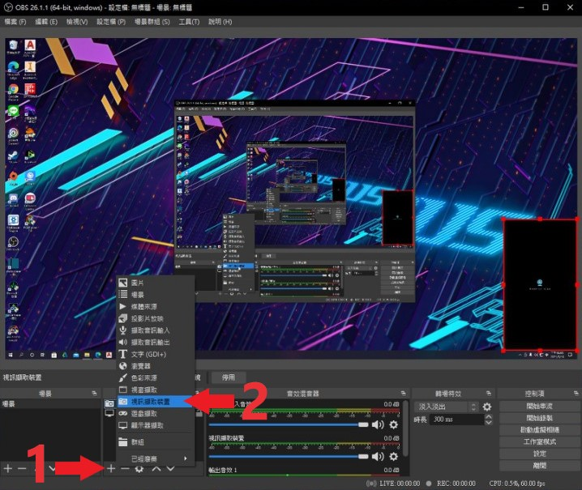
出現視訊擷取對話框:
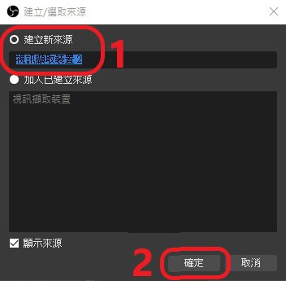
接下來會出現"屬性[視訊擷取裝置]"，將裝置選項選成:e2eSoft iVCam，點擊確定。
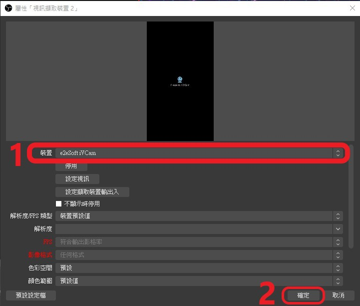
STEP6-成功使用OBS擷取手機鏡頭Webcam
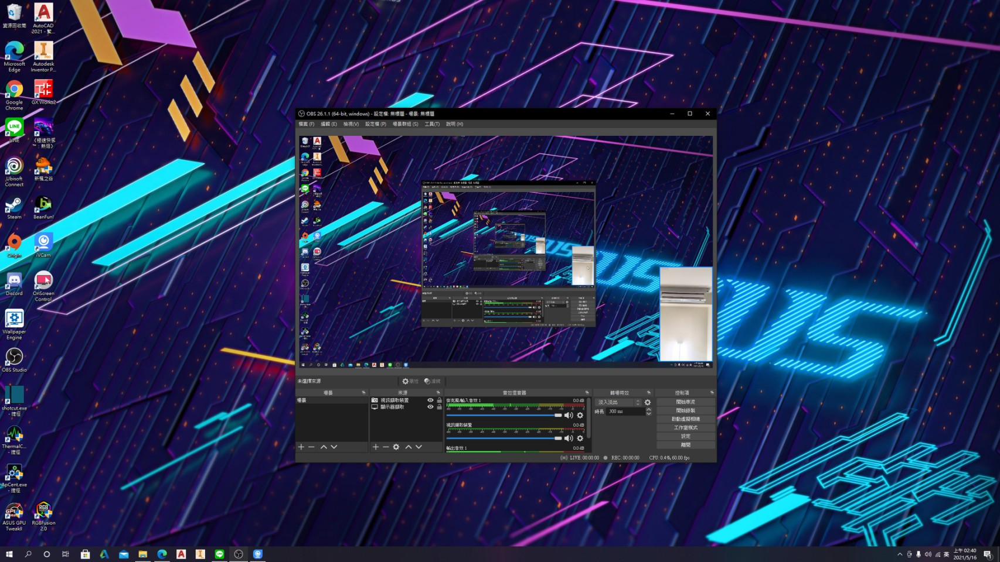
phone webcam <<
Previous Next >> Android for Webcam